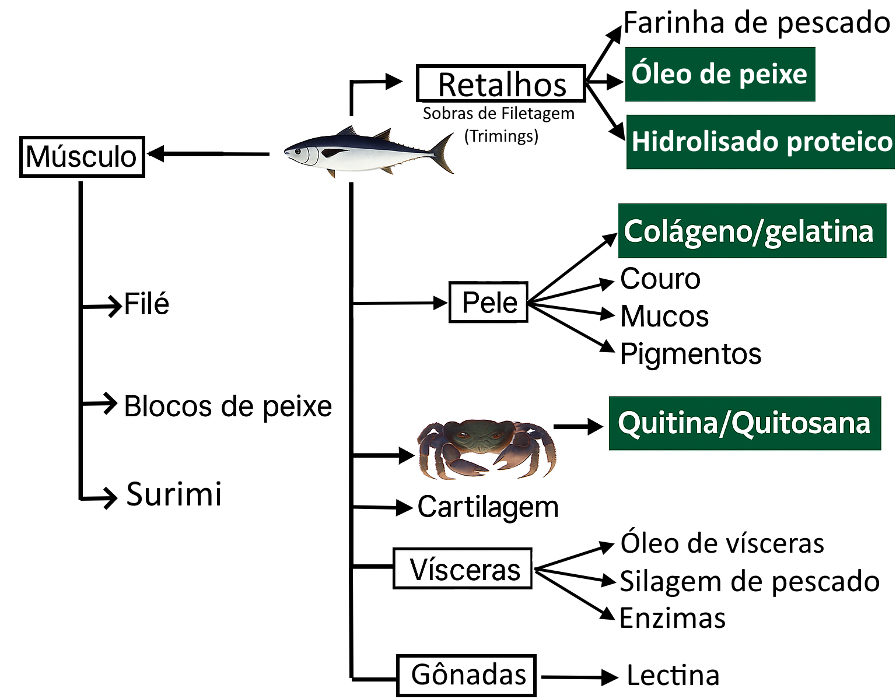
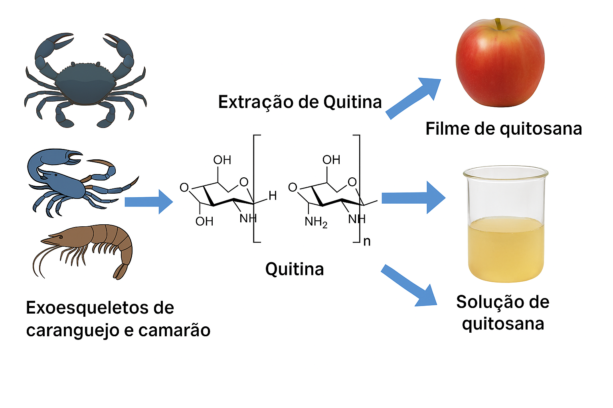
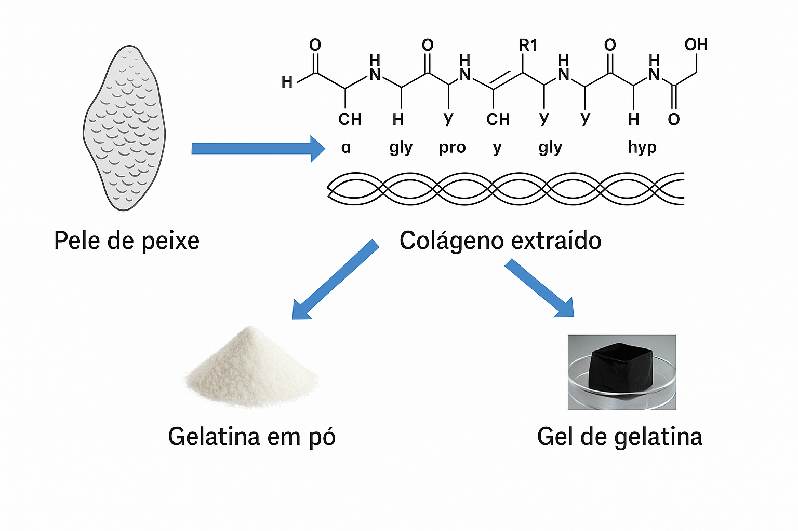
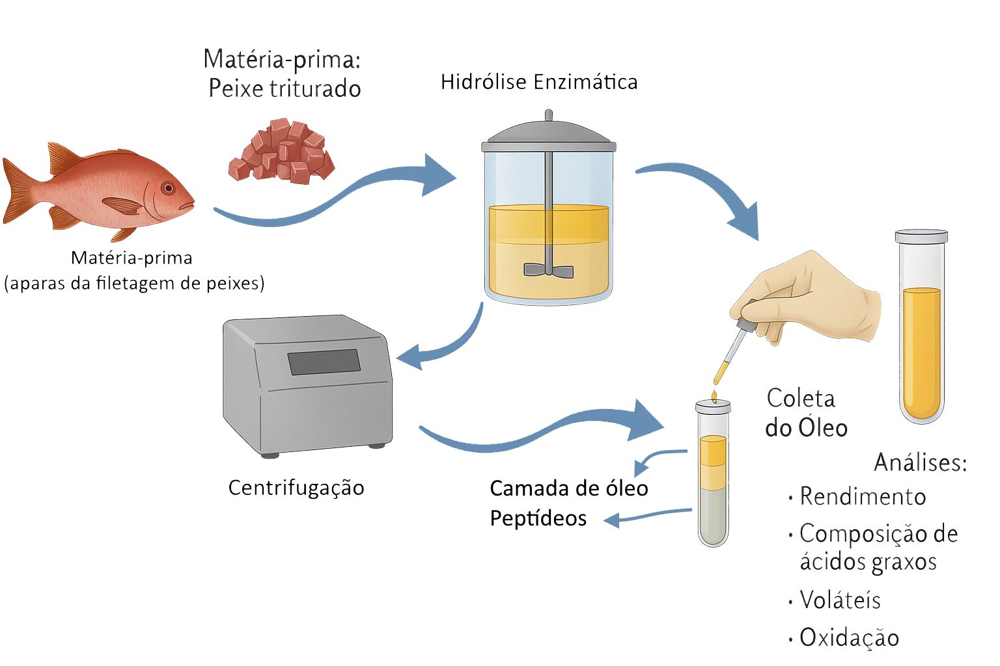
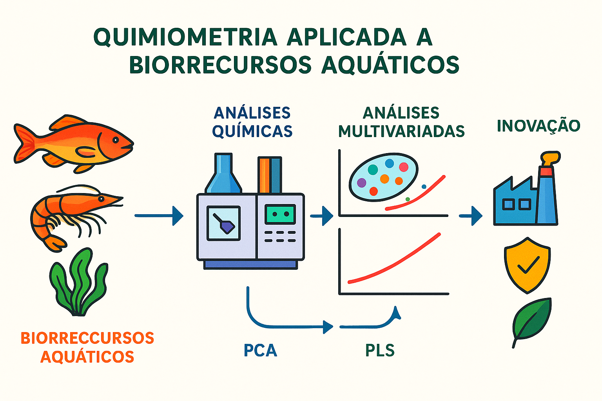
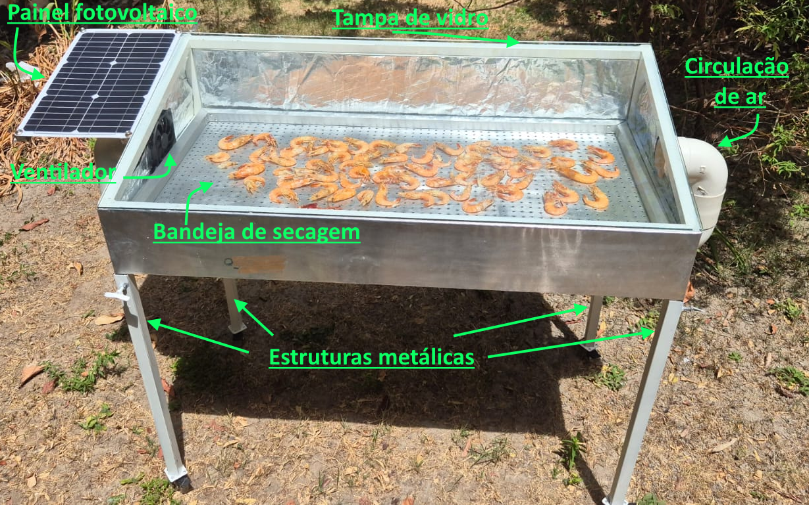
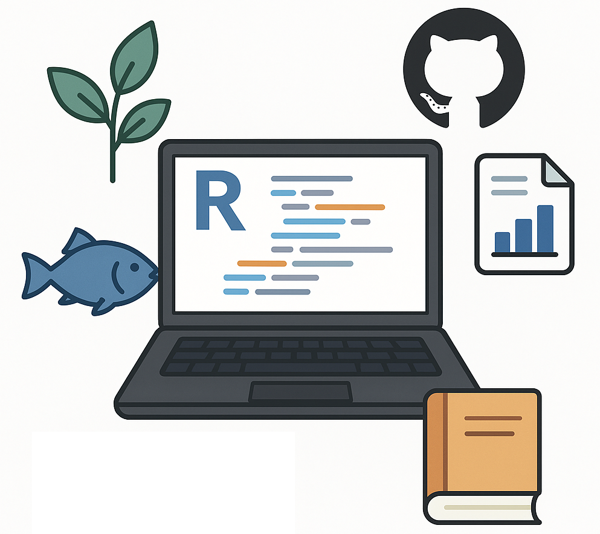

Linhas de Pesquisa
A linha de pesquisa em Processamento de Biorecursos Aquáticos explora o desenvolvimento de técnicas e processos tecnológicos para transformação sustentável de recursos de origem aquática em produtos de alto valor agregado.

O foco principal é agregar valor, melhorar a qualidade, conservar as características nutricionais e promover o aproveitamento integral de pescados e subprodutos da pesca e aquicultura.
🎯 Objetivos Principais
📌 Desenvolver processos tecnológicos para conservação, transformação e aproveitamento de biorecursos.
📌 Valorizar subprodutos da pesca e aquicultura através de rotas inovadoras de processamento.
📌 Promover a sustentabilidade na utilização de recursos marinhos e de água doce.
🔬 Técnicas e Processos Estudados
A linha utiliza métodos tradicionais e inovadores adaptados às características dos biorecursos locais:
Secagem Solar e Mecânica ☀️💨
(Desidratação controlada de pescados e subprodutos.)Extração de Compostos de Interesse 🧬
- Quitosana
- Gelatina
- Hidrolisados Proteicos
- Óelo de Peixe
Aproveitamento Integral de Subprodutos ♻️
(Transformação de resíduos em novos insumos industriais e alimentícios.)
🧠 Aplicações em Desenvolvimento
🐟 Conservação de Peixes e Camarões:
Técnicas de secagem e salga otimizadas para prolongar a vida útil e manter qualidade.
🛢️ Produção de Óleo e Hidrolisados:
Processamento de vísceras e resíduos para obtenção de óleo de pescado e concentrados proteicos.
🧫 Produção de Quitina e Quitosana:
Aproveitamento de carapaças de camarão para obtenção de biopolímeros de alto valor.
🥢 Desenvolvimento de Produtos Fermentados:
Aplicação de fermentação para criação de produtos inovadores a partir de pescados e resíduos.
🚀 Impacto e Inovação
A pesquisa em processamento de biorecursos aquáticos traz benefícios como:
Aproveitamento sustentável de recursos e subprodutos.
Agregação de valor a cadeias produtivas locais.
Geração de novos produtos com aplicação em alimentos, cosméticos, farmacêuticos e biomateriais.
Redução de impactos ambientais pela transformação de resíduos.




Palavras-chave estratégicas:
Biorrefinaria de pescado, aproveitamento de resíduos pesqueiros, biomoléculas marinhas, colágeno de peixe, quitosana, sustentabilidade na pesca, subprodutos da indústria pesqueira, processos biotecnológicos, óleo de pescado, hidrolisados proteicos, tecnologias limpas.

A linha de pesquisa em Quimiometria Aplicada a Biorecursos Aquáticos busca integrar técnicas analíticas avançadas e métodos estatísticos multivariados para a extração de informações químicas relevantes de organismos e produtos aquáticos.
Essa abordagem permite caracterizar biorecursos de forma detalhada, monitorar processos de transformação e desenvolver soluções inovadoras para agregação de valor na pesca e aquicultura.
🎯 Objetivos Principais
📌 Caracterizar biorecursos aquáticos quanto à sua composição química, estrutural e funcional.
📌 Modelar e predizer propriedades de interesse utilizando métodos estatísticos e machine learning.
📌 Controlar a qualidade de matérias-primas e produtos processados de forma não destrutiva e rápida.
🔬 Técnicas Analíticas Utilizadas
A linha de pesquisa faz uso de técnicas modernas de análise química combinadas a abordagens quimiométricas, tais como:
- Espectroscopia no Infravermelho Próximo (NIR) 🧬
(Qualificação de óleos, proteínas, umidade em peixes e derivados.) - Cromatografia Gasosa (GC) 🧪
(Perfil de ácidos graxos para caracterização de espécies.) - Cromatografia Líquida (HPLC) 💧
(Determinação de compostos bioativos e marcadores químicos.) - Modelagem Multivariada (PCA, PLS, SIMCA) 📈
(Análise exploratória e predição de propriedades.)
🧠 Aplicações em Desenvolvimento
📦 Controle de Qualidade:
Aplicação de espectroscopia NIR para monitoramento rápido e não destrutivo da composição de pescado.
🌊 Caracterização Química:
Estudo de ácidos graxos em tecidos de Lutjanídeos para autenticação de espécies e rastreabilidade.
🐟 Qualificação de Bioprodutos:
Determinação de proteínas e lipídios em matérias-primas para otimização de processos industriais.
🧩 Desenvolvimento de Modelos Preditivos:
Construção de modelos quimiométricos para prever qualidade e frescor de produtos aquáticos.
🚀 Impacto e Inovação
A combinação da quimiometria com a ciência dos biorecursos aquáticos representa uma estratégia de inovação para:
- Reduzir custos de análises laboratoriais.
- Aumentar a velocidade de tomada de decisão em processos produtivos.
- Adicionar valor aos produtos pesqueiros e aquícolas, com foco em qualidade e rastreabilidade.
- Promover a sustentabilidade no uso de recursos naturais, com técnicas analíticas não destrutivas.
A secagem solar com painéis fotovoltaicos é uma tecnologia limpa que combina o uso da radiação solar para aquecimento e a geração de energia para ventilação forçada, promovendo a desidratação eficiente de produtos pesqueiros, agrícolas e biológicos. O sistema otimiza o processo de secagem, reduzindo o teor de umidade em menor tempo, preservando a qualidade dos produtos e minimizando o consumo de energia não renovável, contribuindo para a conservação e agregação de valor de bioprodutos.

O secador solar desenvolvido pelo Laboratório de Química do Pescado (LAQUIPE) é uma tecnologia sustentável voltada para a conservação e agregação de valor a produtos pesqueiros, como camarões. O equipamento combina o aproveitamento da radiação solar direta com ventilação forçada alimentada por painel fotovoltaico, promovendo um processo de secagem mais rápido, uniforme e ambientalmente responsável.
A estrutura é composta por uma bandeja perfurada que facilita o escoamento do ar aquecido, paredes internas refletoras que intensificam o efeito estufa e uma tampa de vidro que maximiza a retenção de calor. O painel solar gera energia para acionar uma ventoinha, garantindo a renovação do ar e impedindo a saturação da umidade interna, o que preserva melhor as características físicas, químicas e sensoriais dos bioprodutos.
Este sistema representa uma alternativa eficiente para a valorização de pescados e subprodutos, alinhando inovação tecnológica, sustentabilidade energética e melhoria da qualidade final dos produtos.
🌞 Aproveitamento da energia solar:
Radiação solar direta para aquecimento e secagem eficiente.
⚡ Painel fotovoltaico:
Geração de energia limpa para acionar ventilação forçada.
🍤 Secagem de camarões e produtos pesqueiros:
Preservação de qualidade nutricional, cor e textura.
♻️ Tecnologia sustentável:
Redução do consumo energético e aproveitamento integral de recursos naturais.

🎯 Missão:
Desenvolver rotinas computacionais em R, fortalecer a formação acadêmica e impulsionar a pesquisa aplicada nas áreas de Ciências Agrárias e Biológicas no Campus de Bragança.
🛠️ Eixos Principais:
Criação de códigos em R para análises estatísticas, ecológicas, agrícolas e biológicas.
Planejamento e otimização de experimentos com ferramentas modernas de ciência de dados.
Desenvolvimento de relatórios dinâmicos com Quarto e uso de Git/GitHub para colaboração científica.
Formação de alunos e pesquisadores através de minicursos e materiais educativos.
Análise de séries temporais, dados espaciais e imagens biológicas.
🌱 Impacto Esperado:
Capacitar pesquisadores para enfrentarem desafios científicos complexos, fomentar a inovação nas Ciências Agrárias e Biológicas e ampliar a produção científica do campus.